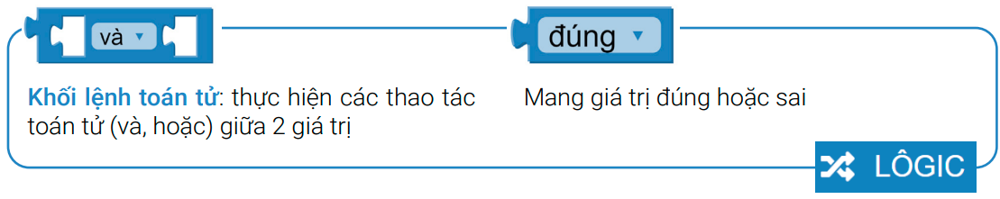

8. Bài 5: Cảnh báo trộm
Mục tiêu
Một ngôi nhà thông minh thì không thể thiếu tính năng cảnh báo trộm. Trong bài học này, chúng ta sẽ cùng lập trình một Smart Home có thể tự động phát ra âm thanh cảnh báo khi có người lạ xuất hiện trước nhà. Bạn có thể dùng remote để bật, tắt chế độ cảnh báo này.
Thiết bị cần dùng
Remote điều khiển
{kind=link}
Cảm biến chuyển động PIR
{kind=link}
Kết nối
Kết nối cảm biến chuyển động PIR vào cổng P16
{kind=link}
Giới thiệu khối lệnh

{kind=link}
{kind=link}
{kind=link}
Viết chương trình
Tạo một biến mới tên cảnh báo và cho giá trị ban đầu của biến cảnh báo là Sai (đồng nghĩa với chế độ cảnh báo đang tắt)
{kind=link}
Khi nút E trên remote được nhấn, chế độ cảnh báo được bật (biến cảnh báo chuyển sang giá trị đúng)
{kind=link}
Tiếp theo, Yolo:Bit hiện hình ảnh báo hiệu và xóa tín hiệu đã thu được từ remote.
{kind=link}
Khi nút F trên remote được nhấn, tắt chế độ cảnh báo (đổi giá trị của biến cảnh báo thành Sai) và tắt toàn bộ đèn LED, đồng thời xóa tín hiệu từ remote:
{kind=link}
Khi chế độ cảnh báo đang bật (cảnh báo = Đúng) và cảm biến PIR phát hiện có người, Yolo:Bit sẽ phát âm thanh cảnh báo
{kind=link}
Chương trình mẫu
Cảnh báo trộm: Tại đây
{kind=link}